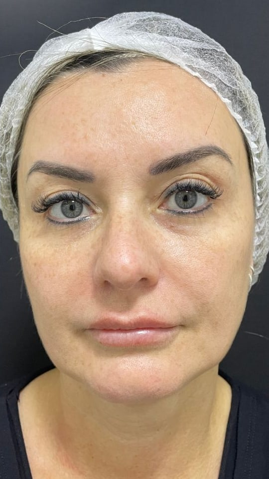
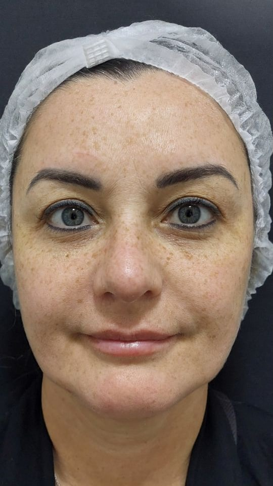

Experiência
Quase 30 anos de atuação e participação ativa nos principais congressos e inovações da dermatologia.
Dermatologia, estética e tricologia · Porto Alegre
Dr. Márcio Teixeira: cuidado personalizado e resultados naturais com quem entende profundamente de pele, com excelência desde 1993.
Resultados reais
Arraste para comparar os dois registros. Resultados naturais, conquistados com avaliação precisa e a tecnologia adequada para cada pele.
Resultado real de paciente da clínica. Imagens exibidas com consentimento.


Por que Dr. Márcio
Quase 30 anos de atuação e participação ativa nos principais congressos e inovações da dermatologia.
Você é ouvido, acolhido e orientado com empatia em todas as etapas do tratamento.
Abordagem única que avalia sua pele em quatro dimensões, para tratamentos mais eficazes e personalizados.
Equipamentos modernos e seguros, que entregam resultados com precisão e conforto.
A beleza está no equilíbrio: respeitamos sua individualidade para realçar o que você tem de melhor.
Método 4D
Esta abordagem exclusiva, criada pelo Dr. Márcio, avalia sua pele em quatro dimensões, para tratamentos mais eficazes e personalizados.
Avalia a superfície da pele, focando nas alterações da coloração, textura, luminosidade e uniformidade.
Tratamento das rugas dinâmicas e estáticas, suavizando os sulcos formados pela expressão.
Reposição ou redução de volume para contornos harmoniosos e definição natural dos traços.
Abordagem da perda de firmeza e sustentação, cuidando da flacidez cutânea e muscular.
Resultados
Passe o cursor sobre a foto, ou toque nela, para ver o resultado.

Dr. Márcio Teixeira
Com quase 30 anos de trajetória, o Dr. Márcio é reconhecido por sua dedicação à dermatologia clínica, estética e cirúrgica. Formado pela UFRGS e com residência no Hospital de Clínicas de Porto Alegre, é membro titular da Sociedade Brasileira de Dermatologia e criador do exclusivo Método 4D.
Conheça o Dr. MárcioValorizar sua beleza natural é minha missão.
Dr. Márcio Teixeira
Tratamentos
Uma seleção de tratamentos faciais, organizados pelos quatro eixos do Método 4D.
 Skinbooster
Eixo 1 · Superfície
Skinbooster
Eixo 1 · Superfície
 Laserterapia · LIP
Eixo 1 · Superfície
Laserterapia · LIP
Eixo 1 · Superfície
 Peelings Químicos
Eixo 1 · Superfície
Peelings Químicos
Eixo 1 · Superfície
 Toxina Botulínica
Eixo 2 · Expressão
Toxina Botulínica
Eixo 2 · Expressão
 Ácido Hialurônico
Eixo 2 · Expressão
Ácido Hialurônico
Eixo 2 · Expressão
 Bioestimuladores
Eixo 3 · Volume
Bioestimuladores
Eixo 3 · Volume
 Harmonização Facial
Eixo 3 · Volume
Harmonização Facial
Eixo 3 · Volume
 Ultrassom Liftera
Eixo 4 · Flacidez
Ultrassom Liftera
Eixo 4 · Flacidez
 Radiofrequência
Eixo 4 · Flacidez
Radiofrequência
Eixo 4 · Flacidez
 Fios de Sustentação
Eixo 4 · Flacidez
Fios de Sustentação
Eixo 4 · Flacidez
Podcast
Dr. Márcio Teixeira e a farmacêutica Cristine Prato conversam sobre pele, cabelo e saúde sem complicar. Ciência de um lado, consultório do outro.
Episódio 3 · 37 min
Hidratar vai muito além de passar um creme. O episódio abre o Eixo 1 do Método 4D pela hidratação: como funciona a barreira cutânea, por que a pele oleosa também precisa ser hidratada, como identificar o seu tipo de pele e quais erros de rotina comprometem o resultado.
Cortes rápidos
Os trechos que mais rendem dúvida no consultório, em menos de um minuto.
Agende sua consulta da forma mais prática para você.